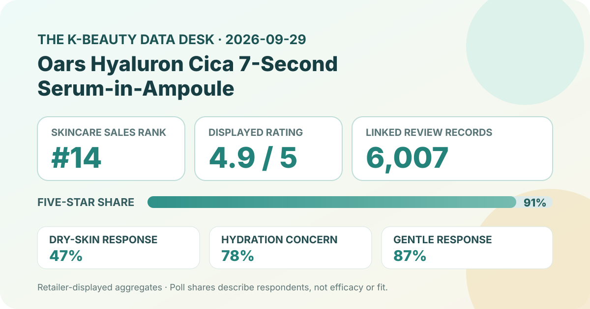
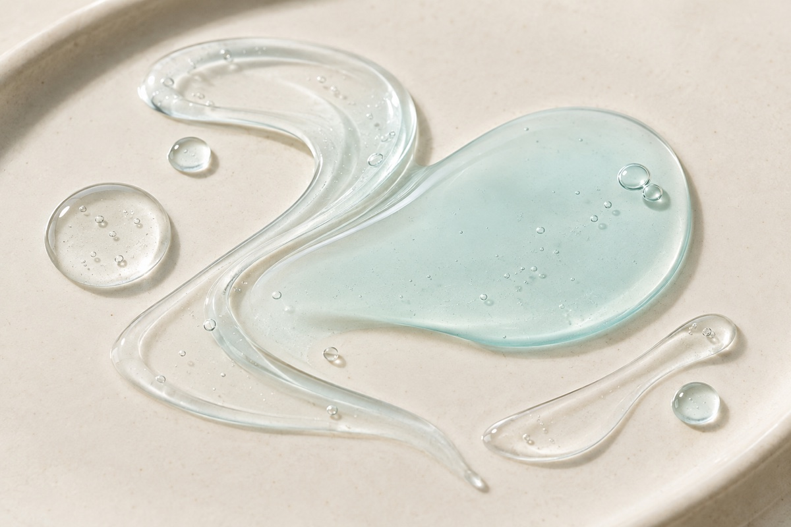

Data captured September 29, 2026. This is an independent analysis of retailer-displayed product information and anonymous aggregate review signals. I did not test the product, and no individual review, reviewer name, product photograph, or user photograph is copied or translated.

The short version: Oars Hyaluron Cica 7-Second Serum-in-Ampoule appeared at number 14 in Olive Young Korea's live skincare sales ranking. The product header and review panel both displayed 4.9 out of 5 from 6,007 review records. The detailed panel showed a 91% five-star share, while the largest shopper-poll responses were dry skin at 47%, hydration concern at 78%, and a gentle response at 87%. These are useful storefront signals, not proof of seven-second absorption, hydration, soothing, safety, or individual suitability.
A 4.9 average over 6,007 displayed records is a substantial and strongly positive retailer signal. The separate star chart helps interpret the rounded average: 91% of selections were displayed as five-star, another 7% as four-star, and 2% as three-star. The interface rounded both lower categories to 0%. That pattern is consistent with a feedback pool concentrated at the top end rather than an average held up by a small number of unusually high scores.
The distribution still has limits. Rounded 0% does not prove that no one selected one or two stars; it means the displayed share rounded to zero. The percentages also describe records linked to the page, not necessarily one identical purchase configuration, batch, seller condition, or date. The listing combined a 105 ml format with a 15 ml extra, and review records may span earlier offers or packaging.
Neither the 4.9 average nor the 91% five-star share identifies why people selected a score. Retail review pools are self-selected, may be influenced by promotions, and are not controlled trials. They cannot isolate formula performance from expectations, price, delivery, packaging, gifts, climate, routines, or other factors.
Dry skin was the largest skin-type response at 47%, narrowly ahead of combination skin at 43%; oily skin accounted for the remaining displayed 10%. This describes who was represented in that poll. It does not mean the product performs better for dry skin, and it does not establish that respondents were diagnosed, consistently classified, or representative of all shoppers.
Hydration was the dominant displayed concern at 78%, followed by soothing at 21% and wrinkle/brightening at 1%. These labels describe response categories in the retailer's interface, not instrumental measurements. A shopper selecting hydration can indicate why the person considered or discussed the product; it does not show a measured change in skin water content or prove a duration of effect.
The irritation panel showed 87% selecting the gentle response, 13% ordinary, and 1% felt irritation. Those rounded values total 101%, an expected artifact when each category is rounded independently. The 87% figure is a favorable perception signal within the poll, but it cannot predict tolerance for a new user or establish hypoallergenicity, non-irritancy, or suitability for a medical condition.

The retailer's automated summary classified 92% of its recent summarized subset as positive. It grouped the anonymous discussion into three broad themes: impressions of deep hydration and quick absorption, makeup sitting more smoothly after use, and convenience or value associated with the container and larger set. This article does not reproduce or translate any review sentence, and the names or photographs of reviewers were not collected.
These themes help show what the automated system found common enough to summarize, but they do not supply a denominator for each topic. They also do not show how the summary model sampled, weighted, or classified the underlying records. “Recent” is not the same as all 6,007 records, and a 92% positivity label should not be multiplied by the total to estimate an exact number of positive reviewers.
The themes remain subjective perceptions. Quick absorption is not a timed test; makeup compatibility varies with base products and application; value depends on the exact offer and checkout total. The responsible use of the summary is to identify topics worth checking, not to convert them into verified product promises.
The retailer categorized the item as an essence, serum, or ampoule and used “7-second serum-in-ampoule” language in the Korean title. That supports a broad format description but not a firsthand sensory claim. I did not dispense, spread, layer, smell, or wear the product. I cannot confirm that it feels watery, gel-like, sticky, cooling, fragrance-free, weightless, or compatible with sunscreen and makeup.
“Seven-second” should be read as naming or positioning, not as a verified absorption time. Human application amount, humidity, skin condition, preceding layers, and the meaning assigned to “absorbed” can all vary. The page's rating and summary cannot validate a stopwatch claim.
The local texture image is intentionally brand-neutral and omits packaging. Its pale aqua color is an editorial choice, not a representation of the real formula. It provides visual pacing only and should not be used to predict what arrives in the set.
The captured title described a 105 ml product with a 15 ml extra. The header showed a ₩27,000 reference price and a ₩21,600 promotional price, equivalent to a displayed 20% reduction at that moment. Promotions, gifts, inventory, seller conditions, and checkout totals can change after capture, so current value should be checked against the exact selected option.
Rank fourteen indicates meaningful current sales visibility within one retailer's skincare ranking on one date. It does not mean fourteenth-best skincare overall or fourteenth-best for a particular concern. Ranking can move with discounts, stock, campaign placement, bundles, season, and the category filter. The review count reflects accumulated linked participation, whereas rank reflects recent sales prominence; the two measurements answer different questions.
The words “hyaluron” and “cica” in the listing name do not establish ingredient concentrations, molecular weights, purity, delivery, or clinical action. This analysis did not independently capture and reconcile a complete current ingredient list for every package or market. It does not infer amounts from naming order, color, price, viscosity, or review language.
No claim is made that the product is fragrance-free, alcohol-free, non-comedogenic, hypoallergenic, pregnancy-compatible, fungal-acne-safe, or appropriate for eczema, rosacea, acne, allergy, broken skin, or another medical concern. The current regional package and authorized label are the relevant sources for ingredients and directions. A clinician or pharmacist can help with a condition, treatment interaction, or history of severe reactions.
The captured header and review panel both displayed 4.9 out of 5 from 6,007 linked records. The detailed chart showed 91% five-star. These are strong retailer feedback signals, not proof of individual fit or efficacy.
Dry skin led the displayed poll at 47%, followed by combination at 43% and oily at 10%. The shares describe poll representation rather than a suitability ranking.
No. It is an aggregate perception response from an unspecified poll denominator. The same panel displayed 1% who felt irritation, and no poll can predict one person's tolerance.
This analysis did not test absorption. The number is part of the product naming, while the anonymous theme summary reflects subjective impressions rather than a standardized timed measurement.
No. It is a generic AI-generated editorial image with no product, package, reviewer, or use-test content.
Oars Hyaluron Cica 7-Second Serum-in-Ampoule was the first valid unpublished family in the captured skincare ranking, appearing at number fourteen after thirteen covered products were skipped. Its ranking and detail names agreed, and both the product header and review panel showed 4.9 from 6,007 records without a loading or access-block signal.
The evidence is favorable but bounded: 91% five-star, leading poll responses of 47% dry skin, 78% hydration concern, and 87% gentle, plus a 92% positive classification in a recent automated summary. Those values describe retail feedback, not measured hydration, timed absorption, treatment, or guaranteed tolerance. Verify the exact set, current price, regional formula, directions, and personal compatibility separately from popularity.
← All K-Beauty Data Desk reviews · Best-seller rankings · Skin-poll representation · About & methodology
The analysis is based on the dated retailer product page captured on 2026-09-29. Open the source listing.
Published by The K-Beauty Data Desk · Aggregate data captured 2026-09-29. No individual review text, reviewer name, product photo, or user photo is reproduced or translated. I did not test the product and received no product or payment for this coverage.